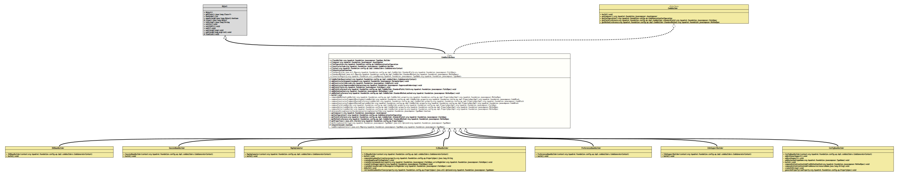

Class CodeBuilderBase
java.lang.Object
org.tquadrat.foundation.config.ap.impl.codebuilders.CodeBuilderBase
- All Implemented Interfaces:
CodeBuilder
- Direct Known Subclasses:
CLIBeanBuilder,ConfigBeanBuilder,I18nSupportBuilder,INIBeanBuilder,MapImplementor,PreferencesBeanBuilder,SessionBeanBuilder
@ClassVersion(sourceVersion="$Id: CodeBuilderBase.java 1105 2024-02-28 12:58:46Z tquadrat $")
@API(status=INTERNAL,
since="0.1.0")
abstract sealed class CodeBuilderBase
extends Object
implements CodeBuilder
permits CLIBeanBuilder, ConfigBeanBuilder, I18nSupportBuilder, INIBeanBuilder, MapImplementor, PreferencesBeanBuilder, SessionBeanBuilder
The abstract base class for all the code builders.
- Author:
- Thomas Thrien (thomas.thrien@tquadrat.org)
- Version:
- $Id: CodeBuilderBase.java 1105 2024-02-28 12:58:46Z tquadrat $
- Since:
- 0.1.0
- UML Diagram
-

UML Diagram for "org.tquadrat.foundation.config.ap.impl.codebuilders.CodeBuilderBase"
{kind=link}
-
Nested Class Summary
Nested ClassesModifier and TypeClassDescriptionstatic enumThe various type to instantiate aStringConverterclass.Nested classes/interfaces inherited from interface org.tquadrat.foundation.config.ap.impl.CodeBuilder
CodeBuilder.StandardField, CodeBuilder.StandardMethod -
Field Summary
FieldsModifier and TypeFieldDescriptionprivate final TypeSpec.BuilderThe class builder.private final JavaComposerThe composer.private final CodeGenerationConfigurationThe configuration for the code generation.private final CodeBlock.BuilderThe builder for body of the constructor.private final CodeGeneratorContextThe code generator context.The registry for the known implementations ofStringConverterimplementations.private final booleanThe synchronised flag.private static final Map<CodeBuilder.StandardField, FieldSpec> The standard fields.private static final Map<CodeBuilder.StandardMethod, MethodSpec> The standard methods. -
Constructor Summary
ConstructorsModifierConstructorDescriptionprotectedCodeBuilderBase(CodeGeneratorContext context) Creates a new instance ofCodeBuilderBase. -
Method Summary
Modifier and TypeMethodDescriptionprotected final voidaddConstructorArgument(ParameterSpec argument) Adds an argument to the constructor.protected final voidaddConstructorCode(CodeBlock code) Adds code to the constructor body.protected final voidAdds a warning to the@SuppressWarningsannotation for the constructor of the new configuration bean.protected final voidaddField(CodeBuilder.StandardField reference, FieldSpec field) Adds the given standard field to the new class.protected final voidAdds the given field to the new class.protected final voidaddMethod(CodeBuilder.StandardMethod reference, MethodSpec method) Adds the given method to the new class.protected final voidaddMethod(MethodSpec method) Adds the given method to the new class.abstract voidbuild()Generates the relevant code.static MethodSpeccomposeAddMethod(CodeBuilder codeBuilder, PropertySpecImpl property) The default implementation of the method that composes an 'add' method for the given property.static CodeBlockcomposeConstructorFragment4Environment(CodeBuilder codeBuilder, PropertySpecImpl property) The default implementation of the method that composes a constructor fragment for the initialisation of the given property in cases it is annotated with@EnvironmentVariable.static CodeBlockcomposeConstructorFragment4SystemPreference(CodeBuilder codeBuilder, PropertySpecImpl property) The default implementation of the method that composes a constructor fragment for the initialisation of the given property in cases it is annotated with@EnvironmentVariable.static CodeBlockcomposeConstructorFragment4SystemProp(CodeBuilder codeBuilder, PropertySpecImpl property) The default implementation of the method that composes a constructor fragment for the initialisation of the given property in cases it is annotated with@EnvironmentVariable.static FieldSpeccomposeField(CodeBuilder codeBuilder, PropertySpecImpl property) The default implementation of the method that composes a field for the given property.static MethodSpeccomposeGetter(CodeBuilder codeBuilder, PropertySpecImpl property) The default implementation of the method that composes a getter for the given property.static MethodSpeccomposeSetter(CodeBuilder codeBuilder, PropertySpecImpl property) The default implementation of the method that composes a setter for the given property.protected static final CodeBuilderBase.StringConverterInstantiationdetermineStringConverterInstantiation(TypeName stringConverterClass, boolean isEnum) Determines how to instantiate the given implementation ofStringConverter.final JavaComposerProvides access to the composer.Provides access to the code builder configuration.final FieldSpecgetField(CodeBuilder.StandardField reference) Returns the specification for a standard field.final MethodSpecgetMethod(CodeBuilder.StandardMethod reference) Returns the specification for a standard method.protected final Iterator<PropertySpec> Returns an iterator over the configured properties.getStringConverter(TypeName type) Returns theStringConvertertype for the given type.protected final booleanReturns the flag that controls whether the configuration bean has to be generated thread safe.
-
Field Details
-
m_ClassBuilder
The class builder. -
m_Composer
The composer. -
m_Configuration
The configuration for the code generation. -
m_ConstructorCode
The builder for body of the constructor. -
m_Context
The code generator context. -
m_IsSynchronized
The synchronised flag. -
m_StandardFields
The standard fields. -
m_StandardMethods
The standard methods. -
m_ConverterRegistry
The registry for the known implementations ofStringConverterimplementations.
-
-
Constructor Details
-
CodeBuilderBase
Creates a new instance ofCodeBuilderBase.- Parameters:
context- The code generator context.
-
-
Method Details
-
addConstructorArgument
Adds an argument to the constructor.- Parameters:
argument- The parameter to add.
-
addConstructorCode
Adds code to the constructor body.- Parameters:
code- The code to add.
-
addConstructorSuppressedWarning
Adds a warning to the@SuppressWarningsannotation for the constructor of the new configuration bean.- Parameters:
warning- The warning to suppress.
-
addField
Adds the given field to the new class.- Parameters:
field- The field to add.
-
addField
Adds the given standard field to the new class.- Parameters:
reference- The identifier for the standard field.field- The field to add.
-
addMethod
Adds the given method to the new class.- Parameters:
method- The method to add.
-
addMethod
Adds the given method to the new class.- Parameters:
reference- The identifier for the standard method.method- The method to add.
-
build
Generates the relevant code.- Specified by:
buildin interfaceCodeBuilder
-
composeAddMethod
The default implementation of the method that composes an 'add' method for the given property.- Parameters:
codeBuilder- The factory for the code generation.property- The property.- Returns:
- The method specification.
-
composeConstructorFragment4Environment
public static CodeBlock composeConstructorFragment4Environment(CodeBuilder codeBuilder, PropertySpecImpl property) The default implementation of the method that composes a constructor fragment for the initialisation of the given property in cases it is annotated with@EnvironmentVariable.- Parameters:
codeBuilder- The factory for the code generation.property- The property.- Returns:
- The field specification.
-
composeConstructorFragment4SystemPreference
public static CodeBlock composeConstructorFragment4SystemPreference(CodeBuilder codeBuilder, PropertySpecImpl property) The default implementation of the method that composes a constructor fragment for the initialisation of the given property in cases it is annotated with@EnvironmentVariable.- Parameters:
codeBuilder- The factory for the code generation.property- The property.- Returns:
- The field specification.
-
composeConstructorFragment4SystemProp
public static CodeBlock composeConstructorFragment4SystemProp(CodeBuilder codeBuilder, PropertySpecImpl property) The default implementation of the method that composes a constructor fragment for the initialisation of the given property in cases it is annotated with@EnvironmentVariable.- Parameters:
codeBuilder- The factory for the code generation.property- The property.- Returns:
- The field specification.
-
composeField
The default implementation of the method that composes a field for the given property.- Parameters:
codeBuilder- The factory for the code generation.property- The property.- Returns:
- The field specification.
-
composeGetter
The default implementation of the method that composes a getter for the given property.- Parameters:
codeBuilder- The factory for the code generation.property- The property.- Returns:
- The method specification.
-
composeSetter
The default implementation of the method that composes a setter for the given property.- Parameters:
codeBuilder- The factory for the code generation.property- The property.- Returns:
- The method specification.
-
determineStringConverterInstantiation
protected static final CodeBuilderBase.StringConverterInstantiation determineStringConverterInstantiation(TypeName stringConverterClass, boolean isEnum) Determines how to instantiate the given implementation ofStringConverter.- Parameters:
stringConverterClass- The String converter class.isEnum-trueif the property is of anenumtype,falseotherwise.- Returns:
- The type of instantiation.
-
getComposer
Provides access to the composer.- Specified by:
getComposerin interfaceCodeBuilder- Returns:
- The composer.
-
getConfiguration
Provides access to the code builder configuration.- Specified by:
getConfigurationin interfaceCodeBuilder- Returns:
- The configuration.
-
getField
Returns the specification for a standard field.- Specified by:
getFieldin interfaceCodeBuilder- Parameters:
reference- The identifier for the standard field.- Returns:
- The field.
-
getMethod
Returns the specification for a standard method.- Specified by:
getMethodin interfaceCodeBuilder- Parameters:
reference- The identifier for the standard method.- Returns:
- The method.
-
getProperties
Returns an iterator over the configured properties.- Returns:
- The iterator.
-
getStringConverter
Returns theStringConvertertype for the given type.- Parameters:
type- The type.- Returns:
- An instance of
Optionalthat holds the requested implementation ofStringConverter.
-
isSynchronized
Returns the flag that controls whether the configuration bean has to be generated thread safe.- Returns:
trueif lock support is required,falseotherwise.
-